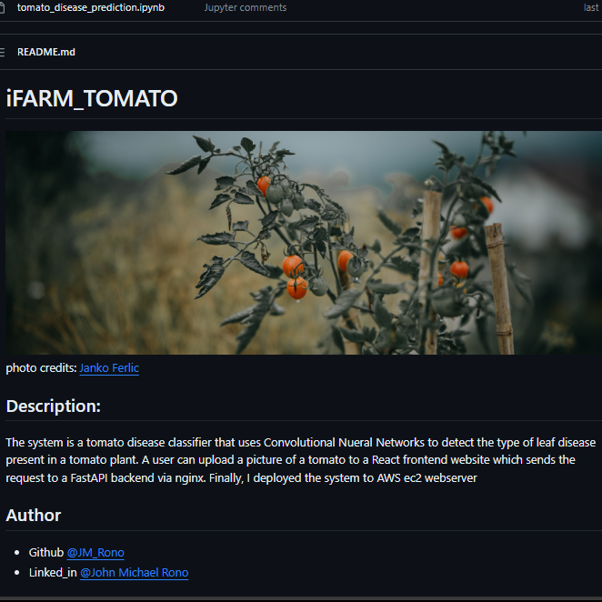
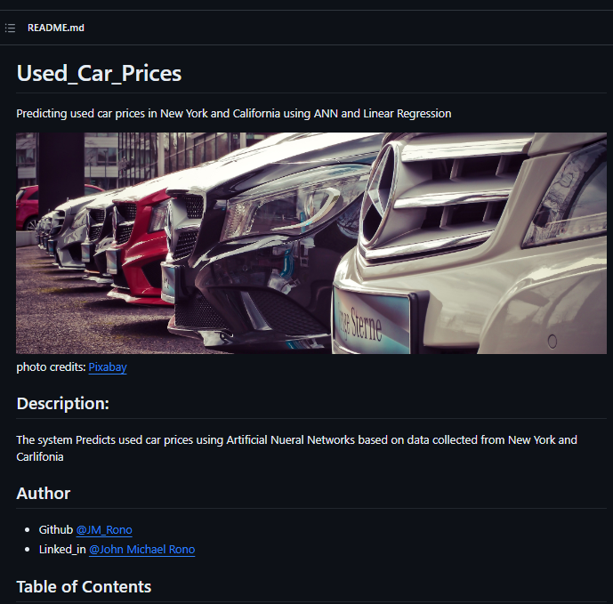
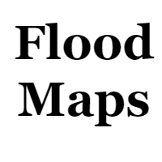
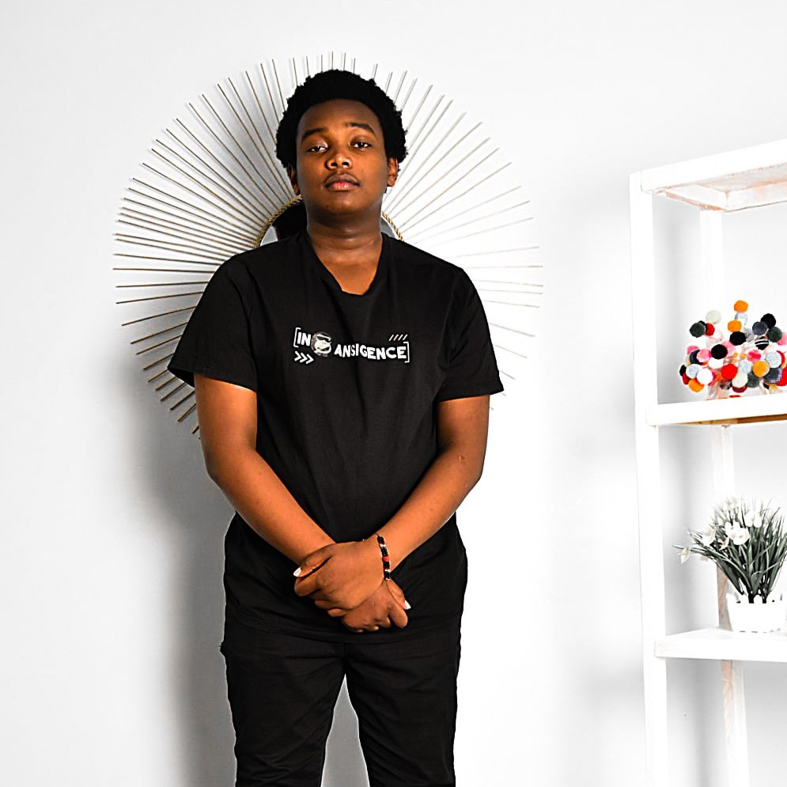

Hi I'm John Michael Rono,
I am a Machine Learning engineer 🤓 with a passion for solving complex problems using data and algorithms 👨🏽💻 I am eager to contribute to the future of machine learning and its application.
Journey
Oct 2023 - Ongoing
I am part of the team working on the funded project titled “enhancing awareness creation and understanding of the data
protection act in Kenya, Uganda, and Rwanda Using Large Language Models”. I successfully adapted GPT 4 for Summarization
and Question Answering (QA) tasks only limiting it to the data of the three countries. This involved understanding the
underlying architecture of the model, manipulating its parameters, and optimizing its performance through rigorous testing
and validation
April 2023 - July 2023
I participated in an innovative project that aimed to detect adulterated milk using computer vision and deep learning
techniques. The project involved developing a novel algorithm that could analyze images of milk samples and identify the
presence of contaminants or additives. The project was a challenging and rewarding experience that enhanced my skills and
knowledge in machine learning and computer vision. Here is a link to the
certificate.
2019 - 2023
BSc at the Jomo Kenyatta University of Agriculture and Technology with a major in computer science. My journey into machine
learning started in my second year of Campus. I did the Stanford CS 229 course on ML
and the Deep Learning
Specialization on Coursera by Andrew Ng. I learnt how to create intelligent systems
that can solve complex problems. Since then, my passion for machine learning has grown immensely, and I have been exploring
various topics and applications in this field.
Projects
s2t
I developed a Swahili speech recognition system using Whisper-small, a general-purpose speech recognition model created by OpenAI.
I fine-tuned the model on a custom dataset of Swahili audio and text.
The finetuned model achieved a word error rate (WER) of 8.365, which is comparable to the state-of-the-art results on Swahili speech recognition.
This project demonstrated the potential of using Whisper-small for low-resource languages and multilingual speech recognition.

iFARM
is a system that uses Convolutional Neural Networks to diagnose diseases in tomato leaves. The system is easy to use:
you just need to drag and drop an image of a tomato leaf and it will tell you what disease it has and how confident it is about
the diagnosis.

Used_car_prices I created a system that uses Artificial
Neural Networks to predict the prices of used cars based on data scraped from the web for New York and California.
The system can help buyers and sellers to find the best deals for used cars in these states.

ONGOING. I am working on a model that can generate maps showing areas sucesptible to floods.
About Me

As a machine learning Engineer, I've worked in the areas of computer vision, Natural Language processing,Time series Forcasting and Model Deployment. Here are a few technologies I've been working with:
- Python
- Tensorflow
- PyTorch
- Keras
- FastAPI
- Streamlit
Featured Writing
- Feb 2023 Gaussian Discriminant Analysis from scatch
- Jan 2023 Logistic Regression from scratch
- Jan 2023 Linear Regression from Scratch